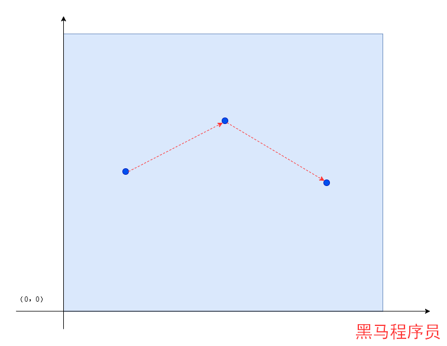
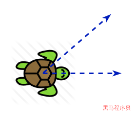
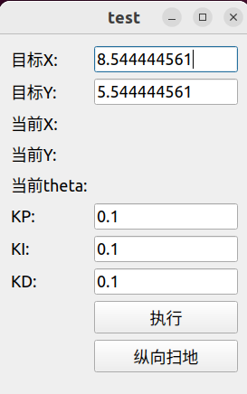

<!DOCTYPE lake>
<p data-lake-id="ue2b49bda" id="ue2b49bda"><span data-lake-id="ud659a68f" id="ud659a68f">https://robot.zhongzhi.com/docs/ros/pid/intro/</span></p><h1 data-lake-id="F7rnC" id="F7rnC"><span data-lake-id="ucd63cdce" id="ucd63cdce">纵向扫地</span></h1><span class="yuque-card-unsupported">[video]</span><h1 data-lake-id="xIwkN" id="xIwkN"><span data-lake-id="u329dce3e" id="u329dce3e">横向扫地</span></h1><p data-lake-id="u51a73734" id="u51a73734"><br/></p><span class="yuque-card-unsupported">[video]</span><h1 data-lake-id="uwfER" id="uwfER"><span data-lake-id="u6f3a62f1" id="u6f3a62f1">回字形扫地</span></h1><span class="yuque-card-unsupported">[video]</span><h1 data-lake-id="lXiRP" id="lXiRP"><span data-lake-id="u0699d666" id="u0699d666">实现分析</span></h1><p data-lake-id="u68a62cc5" id="u68a62cc5"><span class="lake-fontsize-14" data-lake-id="u73d26a13" id="u73d26a13" style="color: rgba(0, 0, 0, 0.87)">小乌龟是按照一定的方式进行移动的，在整个移动过程中，小乌龟都是有自己的路径的，路径的规划是需要考虑的。</span></p><p data-lake-id="u48930e37" id="u48930e37"><span class="lake-fontsize-14" data-lake-id="u3a236b41" id="u3a236b41" style="color: rgba(0, 0, 0, 0.87)">路径规划的算法有很多，但是根本就是生成一系列的点，将点按照顺序连在一起就是路径和轨迹了，点越多，路径越清晰。</span></p><p data-lake-id="u5a8c8644" id="u5a8c8644"></p><p data-lake-id="ua1fba069" id="ua1fba069"><span class="lake-fontsize-14" data-lake-id="ud0b001a1" id="ud0b001a1" style="color: rgba(0, 0, 0, 0.87)">目前小乌龟案例中，我们要解决的是小乌龟由一个点到另外一个点的运动。</span></p><p data-lake-id="u21c9927d" id="u21c9927d"></p><p data-lake-id="uea88430d" id="uea88430d"><span class="lake-fontsize-14" data-lake-id="udc742b9f" id="udc742b9f" style="color: rgba(0, 0, 0, 0.87)">小乌龟运动的特点是，前进或是转角，前进控制了移动的距离，转角控制了移动的方向。</span></p><p data-lake-id="u786dcf65" id="u786dcf65"><span class="lake-fontsize-14" data-lake-id="ub87b7e7f" id="ub87b7e7f" style="color: rgba(0, 0, 0, 0.87)">要控制小乌龟移动到具体的点，就是要解决前进和转向的问题。</span></p><p data-lake-id="u457568b7" id="u457568b7"><span class="lake-fontsize-14" data-lake-id="ufb717963" id="ufb717963" style="color: rgba(0, 0, 0, 0.87)">​</span><br/></p><p data-lake-id="udf12ea96" id="udf12ea96"></p>